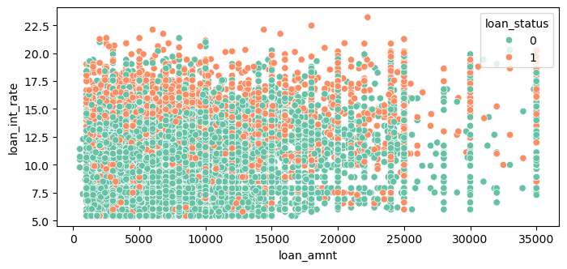
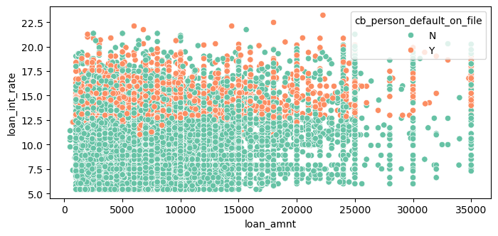

import pandas as pd
url = "https://raw.githubusercontent.com/PhilChodrow/ml-notes/main/data/credit-risk/train.csv"
df = pd.read_csv(url)Abstract
Today, we are going to build a automated decision system that will be demonstrated using a dataset of borrowers from a bank. The objective of this decising making model is to use the training data to predicting whether a not a future applicant is likely to default a loan or repay it in full. We will use this model not only to demonstrate the creation of a decision making model, but also to assist a larger discussion on its societal impacts.
Grabbing and Observing the Data
First we import the dataset that includes previous borrowers:
With df.head() we can see the features that are associated with each borrower:
df.head()| person_age | person_income | person_home_ownership | person_emp_length | loan_intent | loan_grade | loan_amnt | loan_int_rate | loan_status | loan_percent_income | cb_person_default_on_file | cb_person_cred_hist_length | |
|---|---|---|---|---|---|---|---|---|---|---|---|---|
| 0 | 25 | 43200 | RENT | NaN | VENTURE | B | 1200 | 9.91 | 0 | 0.03 | N | 4 |
| 1 | 27 | 98000 | RENT | 3.0 | EDUCATION | C | 11750 | 13.47 | 0 | 0.12 | Y | 6 |
| 2 | 22 | 36996 | RENT | 5.0 | EDUCATION | A | 10000 | 7.51 | 0 | 0.27 | N | 4 |
| 3 | 24 | 26000 | RENT | 2.0 | MEDICAL | C | 1325 | 12.87 | 1 | 0.05 | N | 4 |
| 4 | 29 | 53004 | MORTGAGE | 2.0 | HOMEIMPROVEMENT | A | 15000 | 9.63 | 0 | 0.28 | N | 10 |
Base Rates
To demonstrate that our machine learning model has indeed derived a pattern from the training data, we will try to achieve an accuracy above the base rate. The base rate is the accuracy that we can achieve if we predict one outcome for every possible decision.
1-df["loan_status"].mean()np.float64(0.7824201964395334)in this case, loan_status equals 1 if the borrower did default on their loan, and 0 if they repaid it in full. df["loan_status"].mean gets the percentage of borrowers that defaulted, and subtracting by 1 gives us the perctange of borrows that repaid the loan. If we always predict the applicant will repay the loan, then we will get correct roughly 78% of the time. In order to demonstrate learning by the model, we must aim for an accuracy above 78%.
Visualizing the Data
We want to make informed decisions on the data, which requires that we search for patterns within that data. One question we may ask is: is there a observable pattern of loan intent with respect to age, length of employment, or homeownership status?
To discover this, we will make visualizations of our dataset to prove or dispprove the relation between age, length of employment, or homeownership status and loan intent. We will make use of the LabelEncoder in order to turn our values of loan intent (venture, education, home improvement) into values that will be easier to work with.
Summary Table
summary_table = df.groupby("person_home_ownership").agg({
"loan_amnt": "mean",
"loan_int_rate": "mean",
"loan_status": "mean"
})
summary_table| loan_amnt | loan_int_rate | loan_status | |
|---|---|---|---|
| person_home_ownership | |||
| MORTGAGE | 10562.137462 | 10.491245 | 0.125058 |
| OTHER | 11235.795455 | 12.059221 | 0.306818 |
| OWN | 8978.912626 | 10.850169 | 0.080653 |
| RENT | 8843.507973 | 11.448571 | 0.313971 |
Discussion
This summary table displays the mean loan amount, loan interest rate, and the rate of defaulting the loan based on the person’s home ownership status. We can see that the loan interest rate is about the same for every home ownership type, around 10-12%, as well as the loan amount, however the default rate differs quite dramatically between groups. Those who own their homes statistically almost never default, however those who are renting or have their home ownership status as “OTHER”, have a default rate around 30%. People in the dataset with their home ownership status as “mortgage” have a default rate lower at 12%.
Scatterplot 1 using loan_amnt and loan_int_rate
import seaborn as sns
from matplotlib import pyplot as plt
fig, ax = plt.subplots(figsize = (8, 3.5))
p2 = sns.scatterplot(df, x = "loan_amnt", y = "loan_int_rate", ax = ax, hue = "loan_status", palette="Set2")
Patterns in the Data
We can discern from this visualization that in this dataset, whether a borrower defaults or not is not very dependent on the loan amount, but their interest rate, where borrowers with higher interest rates, usually greater than 13%, are more likely to default than borrowers with interest rates below 13%.
Scatter plot 2 using cb_person_default_on_file
import seaborn as sns
from matplotlib import pyplot as plt
fig, ax = plt.subplots(figsize = (8, 3.5))
p2 = sns.scatterplot(df, x = "loan_amnt", y = "loan_int_rate", ax = ax, hue = "cb_person_default_on_file", palette="Set2")
Patterns in the Data
Here we see a similar split between the data, whereby borrowers who have previously defaulted on their loans have higher interest rates then those who payed back their previous loan in full. As we have seen from the last visualization that interest rates are corellated with the rate of defaulting the loan, we may want to consider if they have previously defaulted in our prediction.
Building the Prediction Model
In order to build our model, we are first going to have to prepare our data to support accurate prediction.
Data Processing
Our first step to processing the data to be trained is to drop unnessecary rows and columns. In this instance, we must drop all rows that do not contain a value for one of their columns, as well as our target variable loan status and loan grade. We use X = pd.get_dummies(X) to hot encode our categorical features such as loan_intent, person_home_ownership, and cb_person_default_on_file, store our target variable in the variable y, and use sklearn’s train_test_split to split the data into training and testing data for cross validation.
from sklearn.model_selection import train_test_split
def prepare_data(df):
df = df.dropna()
X = df.drop(["loan_grade", "loan_status"], axis=1)
X = pd.get_dummies(X)
y = df["loan_status"]
return X, y
X, y = prepare_data(df)
X_train, X_test, y_train, y_test = train_test_split(X, y, test_size=0.2, random_state=42)
X_train| person_age | person_income | person_emp_length | loan_amnt | loan_int_rate | loan_percent_income | cb_person_cred_hist_length | person_home_ownership_MORTGAGE | person_home_ownership_OTHER | person_home_ownership_OWN | person_home_ownership_RENT | loan_intent_DEBTCONSOLIDATION | loan_intent_EDUCATION | loan_intent_HOMEIMPROVEMENT | loan_intent_MEDICAL | loan_intent_PERSONAL | loan_intent_VENTURE | cb_person_default_on_file_N | cb_person_default_on_file_Y | |
|---|---|---|---|---|---|---|---|---|---|---|---|---|---|---|---|---|---|---|---|
| 21383 | 35 | 50532 | 8.0 | 5000 | 13.57 | 0.10 | 8 | False | False | False | True | False | False | False | False | False | True | False | True |
| 2116 | 25 | 60000 | 5.0 | 1200 | 13.85 | 0.02 | 2 | False | False | True | False | False | False | False | False | False | True | True | False |
| 5631 | 30 | 55000 | 1.0 | 6500 | 10.99 | 0.12 | 7 | True | False | False | False | False | False | True | False | False | False | True | False |
| 20675 | 30 | 34046 | 2.0 | 12000 | 14.96 | 0.35 | 6 | False | False | False | True | False | False | False | True | False | False | False | True |
| 9582 | 23 | 70522 | 7.0 | 9325 | 10.91 | 0.13 | 3 | False | False | False | True | False | False | False | True | False | False | False | True |
| ... | ... | ... | ... | ... | ... | ... | ... | ... | ... | ... | ... | ... | ... | ... | ... | ... | ... | ... | ... |
| 13577 | 32 | 52000 | 0.0 | 2500 | 8.88 | 0.05 | 10 | False | False | False | True | False | False | False | False | True | False | True | False |
| 24532 | 36 | 60000 | 7.0 | 17050 | 12.69 | 0.28 | 14 | True | False | False | False | True | False | False | False | False | False | True | False |
| 6125 | 22 | 27264 | 4.0 | 5000 | 13.11 | 0.18 | 3 | False | False | False | True | False | True | False | False | False | False | False | True |
| 974 | 35 | 50000 | 0.0 | 5600 | 12.53 | 0.11 | 7 | True | False | False | False | False | True | False | False | False | False | False | True |
| 17904 | 28 | 47000 | 5.0 | 9000 | 12.42 | 0.19 | 8 | True | False | False | False | False | False | True | False | False | False | True | False |
18325 rows × 19 columns
Picking the Features and Fitting the Model
We will be using sklearn’s SelectKBest with the scoring function mutual_info_classif to get the most predictive features, limiting the number of features to 6 to lower the amount of iterations the machine learning model must compute.
from sklearn.feature_selection import SelectKBest, mutual_info_classif
selector = SelectKBest(score_func=mutual_info_classif, k=6)
X_selected = selector.fit_transform(X_train, y_train)
features = X.columns[selector.get_support()]
print(features)Index(['person_income', 'loan_int_rate', 'loan_percent_income',
'person_home_ownership_RENT', 'cb_person_default_on_file_N',
'cb_person_default_on_file_Y'],
dtype='object')Building the Model
Now that we have obtained our features, we create a logistic regression model and train it on X_train, using only our selected models with X_train[features]. After fitting the model, we can produce a score that will show our models predictive accuracy.
from sklearn.linear_model import LogisticRegression
LR = LogisticRegression(max_iter=50000)
LR.fit(X_train[features], y_train)
LR.score(X_train[features], y_train)0.8461664392905867Results
We see through our score that we got a higher predictive accuracy than our base rate of 78%, showing that are model indeed learned patterns through our training data and selected features.
LR.score(X_test[features], y_test)0.8384984722828459We get similar results on new data, showing that are model was able to create generalizations that can be extrapolated to predict unseen data.
Our Goal
Our goal now is to find a threshold that will provide a binary answer to the question of whether our not the bank should give a loan to a potential appliant and to compute the overall profit gained or lost by the bank.
Approach
The apporach we will be taking is to first calculate a score to give each applicant s, with that score being the likelihood of whether or not an applicant will default on their loan or not. If this score is higher than our choosen threshold, the model will predict that the applicant will default on the loan and the bank will not lend to the applicant. If this score is lower or equal to our choosen threshold, the bank will lend
Calculations
In order to evaluate the total profit that the bank gains or losses given a particular threshold value, we will assume for convience that if the loan is repaid in full, the profit for the bank is equal to loan_amnt*(1 + 0.25*loan_int_rate)**10 - loan_amnt and if the borrower defaults on the loan, the “profit” for the bank is equal to loan_amnt*(1 + 0.25*loan_int_rate)**3 - 1.7*loan_amnt. If the bank doesn’t give out a loan, their profit is 0 for that particular borrower.
Weights
Our weights, stored in the variable in LR.coef where LR is our logistic regression model shows an array with all of the weights for our chosen features respectively. This is also known as our weight vector, which we can then use to find the threshold in order for our model to produce a yes or no answer.
weight_vector = LR.coef_
weight_vectorarray([[-9.48057341e-06, 2.85958980e-01, 7.67127417e+00,
1.01511915e+00, -2.08025653e+00, -1.98039962e+00]])Finding a Threshold
In order to create an automated system that finds the threshold that maximizes the total profit, we are going to split this task up into three functions: linear_score, individual_profit, and find_threshold.
Linear Score Function
This function computes the dot product of the values of the features for each borrower in the dataset and multiple them by the weights determined by the logistic regression model. This in turn will produce a score which gives a numerical value to the likelihood of the borrower defaulting or repaiding a loan.
def linear_score(features, weights):
return features@weights.flatten()Individual Profit Function
This function takes the loan amount and loan intrest rate of a borrower and computes based on their score and the threshold the profit that the bank will make dealing with this applicant. If the score is greater than our chosen threshold, the bank’s profit will be 0, because the bank will not lend to the potiental borrower. In the case where the model predicts the applicant will repay the loan, we then are faced with two more options. If the applicant actaully did repay the loan, that the profit is the repaid_profit value discussed previously. If the bank lends to an applicant but they default, then the bank in this case will lose profit, shown by the value of default_profit.
import numpy as np
def individual_profit(loan_amnt, loan_int_rate, score, threshold, loan_status):
loan_int_rate = loan_int_rate / 100
repaid_profit = loan_amnt*(1 + 0.25*loan_int_rate)**10 - loan_amnt
defaulted_profit = loan_amnt*(1 + 0.25*loan_int_rate)**3 - 1.7*loan_amnt
return np.where(score <= threshold,
np.where(loan_status, defaulted_profit, repaid_profit),
0)Find Threshold Function
This function uses np.linspace(0,1,1000) to enumerate through 1000 threshold values evenly spaced between 0 and 1, and notes the total profit gained from that selected threshold with the value of total_proft using the np.sum function. If that profit is greater than our value for max_profit, then we update max_profit and best_threshold to reflect the threshold value that gives the bank the maximum profit.
import numpy as np
def find_threshold(df, features, score_function, w, y):
max_profit = float("-inf")
best_threshold = 0
scores = score_function(df[features], w)
thresholds = np.linspace(0, 1, 1000)
for threshold in thresholds:
total_profit = np.sum(individual_profit(df["loan_amnt"], df["loan_int_rate"], scores, threshold, y))
if total_profit > max_profit:
max_profit = total_profit
best_threshold = threshold
return best_threshold, max_profit
Results
Our resulting function reports that the best threshold value is 0.99 which will predict a profit of $280,747.
threshold, profit = find_threshold(X_train, features, linear_score, weight_vector, y_train.values)
(threshold, profit)(np.float64(1.0), np.float64(6790404.549188839))Profit per Borrower
We can then compute how much money on average the bank generates for each borrower using this automated decision making system by dividing the total profit by the number of borrowers in the dataset.
profit_per_borrower = profit / len(X_train)
profit_per_borrowernp.float64(370.55413638138276)Model Evaluation: Bank’s Perspective
To sum up our creation of a predictive decision making model, we are going to test it on the data stored in df_test.
url = "https://raw.githubusercontent.com/PhilChodrow/ml-notes/main/data/credit-risk/test.csv"
df_test = pd.read_csv(url)
X_df_test, y_df_test = prepare_data(df_test)
LR.fit(X_df_test[features], y_df_test)
weight_vector = LR.coef_
threshold, profit = find_threshold(X_df_test, features, linear_score, weight_vector, y_df_test.values)
threshold, profit(np.float64(1.0), np.float64(112120.47474005715))Running our automated decision making system on the
Model Evaluation: Borrower’s Perspective
Lets now evaluate how the model treats individual borrowers based on their age, loan intent and income. the main questions we want to ask are those of discrimination: Is it more difficult for people in certain age groups to access credit? Is it more difficult for people to get loans in order to pay for medical expenses? How does a person’s income level impact the ease with which they can access credit?
Differences in Age Groups Access To Credit
To answer this question we can make a summary table. We use the pd.cut function to make continous variables into categorical variables.
import pandas as pd
import numpy as np
age_bins = [18, 25, 35, 50, 65, 100]
age_labels = ["<25", "25-35", "35-50", "50-65", ">65"]
df_test["age_group"] = pd.cut(df_test["person_age"], bins=age_bins, labels=age_labels)
scores = linear_score(X_df_test[features], weight_vector)
df_test["approved"] = scores > threshold
age_acceptance_rates = df_test.groupby("age_group")["approved"].mean()
display(age_acceptance_rates)/var/folders/pv/gfxr_25s0q9gt_2k6h_bbgmc0000gn/T/ipykernel_31580/1654173622.py:16: FutureWarning: The default of observed=False is deprecated and will be changed to True in a future version of pandas. Pass observed=False to retain current behavior or observed=True to adopt the future default and silence this warning.
age_acceptance_rates = df_test.groupby("age_group")["approved"].mean()age_group
<25 0.99521
25-35 0.987067
35-50 0.979094
50-65 0.97561
>65 1.0
Name: approved, dtype: objectResults
What we can see from the function’s output is that people higher in age (likely correlated with higher income) are more likely of being lent a loan.
Difficuly Getting Loans for Medical Expenses
To answer this question, we will use the pd.groupby() function to group all of the applicants in df_test into the two groups loan_intent_acceptance which contains only the applicants that got their loan request approved and gets the percentage of those applicants whos loan intent was one of the following loan_intent values, and loan_intent_default which the same as loan_intent_acceptance except that it contains the true rate of default for that group.
loan_intent_acceptance = df_test.groupby(["loan_intent"])["approved"].mean()
loan_intent_default = df_test.groupby(["loan_intent"])["loan_status"].mean()
loan_analysis = pd.DataFrame({
"Acceptance Rate": loan_intent_acceptance,
"Default Rate": loan_intent_default
})
display(loan_analysis)| Acceptance Rate | Default Rate | |
|---|---|---|
| loan_intent | ||
| DEBTCONSOLIDATION | 0.990044 | 0.279497 |
| EDUCATION | 0.988946 | 0.167421 |
| HOMEIMPROVEMENT | 0.993506 | 0.246088 |
| MEDICAL | 0.991612 | 0.281553 |
| PERSONAL | 0.988978 | 0.219227 |
| VENTURE | 0.988589 | 0.145701 |
Income Level vs Access to Credit
To answer this question we take the same approach we took in tacking difference in loan availibility based on age groups to answer the question based on income groups.
income_bins = [0, 30000, 60000, 100000, 500000]
income_labels = ["<30K", "30K-60K", "60K-100K", ">100K"]
df_test["income_group"] = pd.cut(df_test["person_income"], bins=income_bins, labels=income_labels)
income_acceptance_rates = df_test.groupby("income_group")["approved"].mean()
display(income_acceptance_rates)/var/folders/pv/gfxr_25s0q9gt_2k6h_bbgmc0000gn/T/ipykernel_31580/2528908447.py:8: FutureWarning: The default of observed=False is deprecated and will be changed to True in a future version of pandas. Pass observed=False to retain current behavior or observed=True to adopt the future default and silence this warning.
income_acceptance_rates = df_test.groupby("income_group")["approved"].mean()income_group
<30K 1.0
30K-60K 1.0
60K-100K 1.0
>100K 0.998652
Name: approved, dtype: objectResults
Here, we see that applicants who have a higher income have a much higher chance of getting a loan request accepted then applicants with lower incomes.
Overall Reflection
Here we highlight notable problems with a decision making algorithm deciding whether or not applicants deserve loans or not. As the model, weights, and threshold were decided with the intention of garnering the bank with the maximum amount of profit, there were considerable issues regarding how the model treated individual applicants. My findings note that the need for the loan (due to lower age, income, or important reasons such as a medical expenses) is inversely related to the availability of the loan under this decision making system.